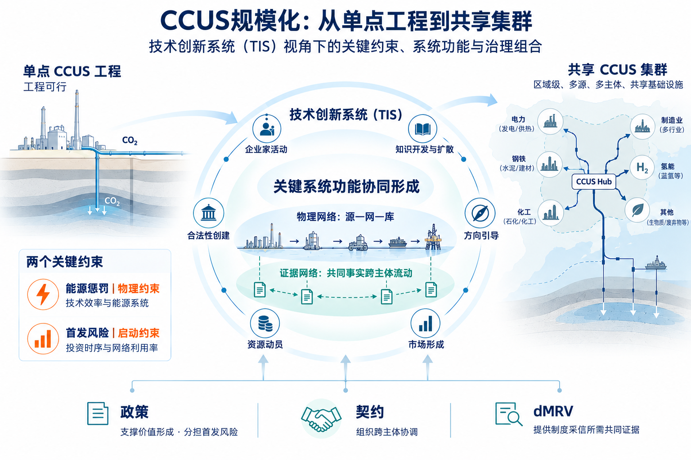
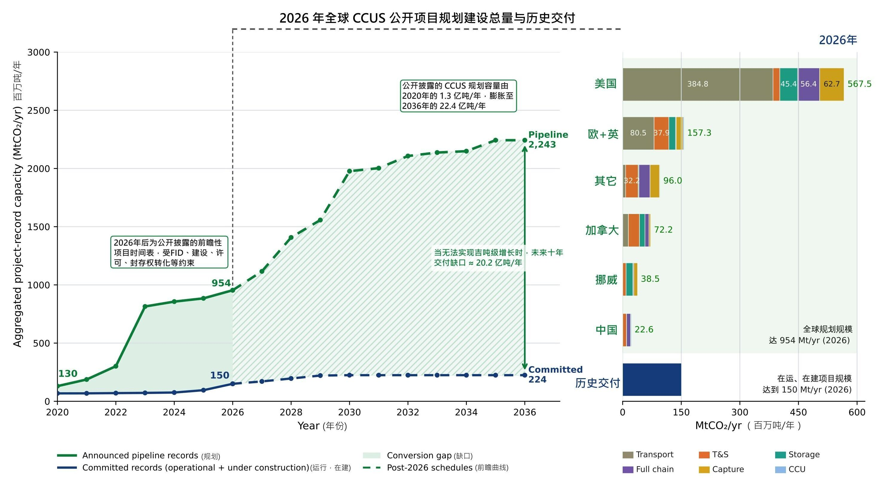
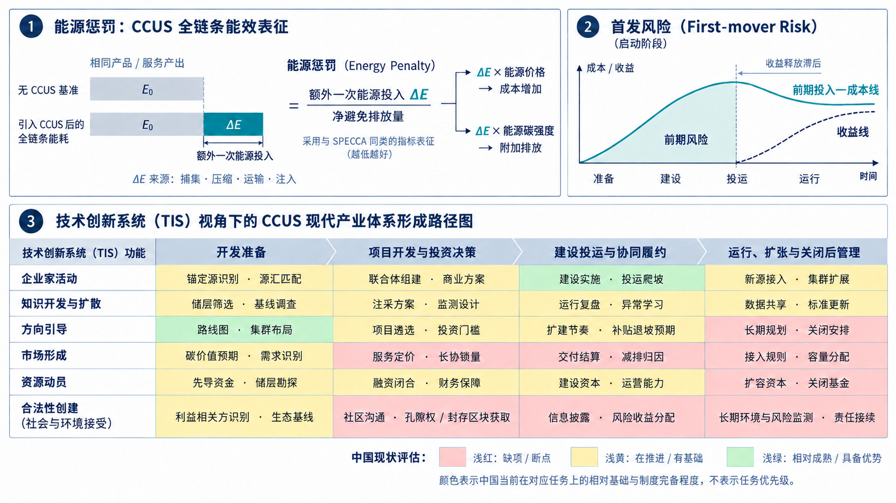
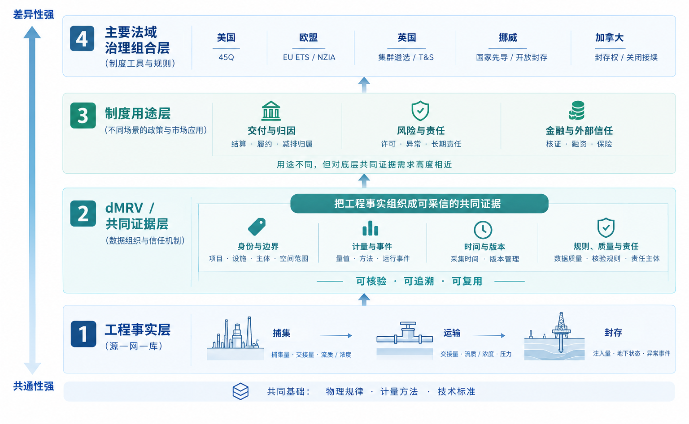

研究问题、分析框架与材料说明
本文研究 CCUS 从单体工程示范走向共享集群时面临的治理问题，重点回答三个问题：已有项目证明工程可行，为什么规模化集群仍难形成？不同国家和地区如何支持减排价值实现、分担投资风险并协调各方行动？进入多主体运行后，dMRV 如何使工程记录成为各方可以共同复核、按照不同规则使用的证据？
本文采用制度比较，并借助技术创新系统（Technological Innovation Systems，TIS）功能框架，识别 CCUS 从工程示范走向产业形成的系统瓶颈。TIS 关注市场、资源、参与主体与制度条件能否随技术发展协同演进，主要考察企业家活动、知识开发、知识扩散、方向引导、市场形成、资源动员和合法性创建等功能。这一框架也已用于分析 CCS 向多行业、多主体价值链扩展中的协同问题[73, 74, 75, 76]。
在 TIS 功能诊断的基础上，本文结合 CCUS 的全链条运行与网络协作特征，进一步区分两项关键约束：贯穿运行期的能源惩罚，以及集中于集群启动和投资协调阶段的首发风险。前者影响净减排效果与持续运行成本，后者影响“源—网—库”能否协调投入并形成服务网络。
共享集群进入多主体运行后，还需要解决工程事实如何在不同企业和制度主体之间得到确认和使用的问题。交付确认、异常处置和长期责任审查都依赖共同、可复核的工程证据。相关证据要求应在项目设计阶段予以考虑，并在运行中持续验证，使 dMRV 从项目级监测与报送工具延伸为跨主体证据组织机制。本文将这种组织、复核和使用工程证据的能力概括为“产业信用基础设施”。
本文是一项前瞻性政策研究，聚焦 CCUS 地质封存及其集群化治理，涵盖多源碳捕集、共享运输网络、咸水层和枯竭油气田封存，以及油田 CO2 驱油过程中的伴随封存。自然碳汇和一般自愿碳抵消项目不属于本文主要讨论范围。
材料主要来自法规、标准和政策文本，企业、项目方及主管机构公开资料，以及同行评议文献和机构研究报告。法规与标准用于确认制度要求和监管边界，项目资料用于核对项目状态、技术路径和运行安排，研究文献用于支撑技术判断、产业趋势和情景分析。对商业合同和运营数据未充分公开的事项，本文判断以公开证据为限，核心判断与证据索引见附录 B。政策与案例比较基于截至 2026 年 9 月 22 日可获得的公开资料；项目分布统计固定采用 2026 年 3 月数据库快照，以保持统计口径一致。
1 CCUS 规模化的系统障碍与治理转型
1.1 从吉吨级需求到交付鸿沟
风光水核、终端电气化和能效提升将承担净零转型的主体减排任务，但钢铁、水泥、化工等行业仍存在难以消除的过程排放；部分低排放能源生产仍有 CO2 捕集需求，航空、航运和农业等领域难以消除的剩余排放则需要碳移除加以抵消。因此，主流净零情景对碳捕集、利用与封存（CCUS）提出了吉吨级（十亿吨级）部署要求[21]。这一要求进一步进入国家规划、产业目标和政策工具：欧盟设置 CO2 注入能力目标，英国推进集群排序和输送封存商业模式，美国以《美国国内税收法典》第45Q条（45Q）税收抵免改善项目收益预期，挪威和加拿大则依托油气工程、公共资本和长期责任安排发展共享封存能力[1, 2, 4, 27]。
在政策推动下，全球 CCUS 项目规划迅速扩张，但规划储备与工程落地之间仍存在显著差距。图 1 通过比较规划项目与已进入建设、运行阶段项目的规模，反映项目由储备向工程实施转化的程度。按 2026 年 3 月 IEA 数据库快照中的年处理能力统计，预计于 2026 年底前投运的规划项目规模约为 954 MtCO2/yr，其中已运行以及已进入建设阶段、预计同期投运的项目合计约 150.3 MtCO2/yr（详见附录 A 表）。按项目披露的投运时间表加总，至 2036 年规划项目记录的累计年处理能力约为 2,243 MtCO2/yr，而预计建设或运行阶段的项目仅约 224 MtCO2/yr[22, 66]。
规划规模快速增长，并不意味着捕集、运输和封存能力能够同步到位。捕集项目较容易形成规划储备，而运输网络、封存库容、注入井体系和监测设施往往需要更长的建设周期；长期责任安排则需要更复杂的跨主体协调。以美国为例，Princeton Net-Zero America 研究显示，实现净零情景所需 CO2 输送网络规模可能达到约 10 万公里，说明 CCUS 规模化不仅依赖捕集设施建设，也依赖跨区域运输和共享基础设施的同步建成[24]。只有当运输封存服务、收入机制、核证和长期责任安排同时到位，捕集能力才能转化为稳定交付。
加拿大、挪威等地已有百万吨级 CCUS 项目持续运行，并积累了长期监测、跨主体交付和公开披露经验[7, 9, 22, 51]。单体工程成功并不会自动形成产业网络，减排价值、基础设施、投资和制度规则还需相互衔接。CCUS 规模化的关键问题，也因此从“能否建成”转向“能否长期运行、能否组织为网络、能否形成可信减排结果”。
中国的发展路径尤其值得观察。大型国有能源与工业企业、公共组织资源以及较完整的工程供应链，使中国具备较强的项目动员和工程实施能力。但捕集源、运输封存设施和长期责任往往跨行业、跨区域和跨部门。中国的实践因此提出了一个值得研究的问题：如何依托较强的工程组织能力，逐步形成共享集群所需的投资协调、服务交易和长期责任机制？

1.2 地质封存的结构性约束
CCUS 的气候效益最终取决于捕集的 CO2 能否得到长期、稳定的地质封存。地质封存的结构性难题在于，关键地下风险难以被直接、连续和低成本地观察。CO2 注入后，储层压力、羽流迁移、盖层封闭性和井筒完整性都会长期演化，储层非均质性、断裂系统和注采历史又进一步增加不确定性。因此，单次监测通常只能反映特定时间窗口内的状态，长期稳定性判断需要连续观测、模型更新与多类证据相互印证[40, 44]。
地下风险持续演化，监测与核证却通常依靠阶段性调查、周期性报告和模型更新。3D/4D 地震、测井、压力监测和储层模拟在空间覆盖、时间分辨率、成本和解释能力上各有边界，单一手段难以形成对地下状态的完整判断[45]。因此，封存风险管理不能止于获得监测数据，还需要将其纳入判别与响应流程：依据许可边界和模型预期识别偏差，并明确何时追加调查、调整运行或采取纠正措施[32]。
同一封存库承接多个来源的 CO2 后，地下状态变化可能同时影响多个客户、合同和责任主体。项目建成并不意味着地下风险停止演化，各方仍需持续判断：目前是否安全，异常是否得到解释，何时具备关闭条件，后续由谁管护。跨周期证据积累，是评估封存安全、确认关闭条件和衔接长期责任的重要基础。
1.3 从单体工程到共享网络治理
早期 CCUS 多以“单源—单汇”一体化示范为主，工程、企业和责任边界大体重合，商业结算与责任界定多可在企业内部协调。进入共享基础设施后，捕集、运输与封存由不同主体投资运营，储层开发、运输调度与长期监测跨越多个企业与监管层级。单个环节合规已不足以保证网络整体稳定。治理对象随之扩展为跨主体、跨环节和跨周期的运行网络。
集群化带来三项结构变化：
计量边界与法人边界分离。多家企业共用运输与封存系统后，CO2 流量、流质、系统损耗和运行排放需要在不同主体之间持续计量与归属，计量边界不再等同于法人边界。
价值链由一体化转向专业化分工。捕集方、运输方与封存方可以分别提供服务，容量分配、交付确认、费用结算和违约责任需要由合同与网络规则明确[20]。
风险在网络内传导。流质异常、运输受限或封存端注入能力下降，都可能影响其他用户的交付和减排确认，局部工程风险由此转化为网络风险[31, 51]。
1.4 集群形成的三类系统问题与两项关键约束
CCUS 集群形成需要同时解决价值形成、跨主体协调和制度采信三类问题。它们分别决定项目是否具有持续收益基础、价值链能否同步投资并稳定运行，以及工程结果能否被不同制度主体共同使用。
价值如何形成并在全链条分配。
CCUS 的成本与风险分布在全链条，减排价值却往往首先体现在排放源一侧。捕集端承担产线改造及额外能耗，网络运营方承担先导容量与利用率不足风险，封存开发商承担储层勘探与渗漏风险。履约收益、税收优惠或低碳产品溢价等减排价值，难以自动传递给运输与封存设施的投资运营方。产业形成需要回答：这些价值能否覆盖全链条成本，能否流向承担基础设施和长期安全责任的主体，以及短期政策支持能否支撑长期投资与合同安排[20, 67]。
价值链如何同步投资并稳定运行。
捕集方与运输封存运营商面临投资上的双向等待：前者在缺少可靠运输和封存服务时不愿率先改造，后者在没有锚定客户和确定流量前也难以启动建设。储层评价、管网建设、捕集改造、许可审批和客户签约周期不同，单靠双边交易难以确保全链条同步达到投资条件[20, 31]。集群规划、政府主导的公共地质调查、先导投资和锚定用户承诺，有助于降低开发不确定性并协调投资；开放接入和网络运营规则则支持共享设施稳定运行[96]。
工程结果如何获得制度采信。
网络投运后，来源身份、交接计量、损耗与排放分摊、地下风险和异常处置等事项，需要不同主体持续核对。客户、核证机构、监管部门以及银行和保险机构关注的内容不同，却都需要追溯同一组工程事实。传统依赖周期性报送、人工核对和独立核证的流程，往往要求各方重复整理材料，增加复核成本[52]。对依赖碳信用收入的项目，核证与签发周期还可能影响资金回流[53]。交付量更正、风险状态变化或责任阶段转换时，跨主体审查还要求相关工程记录能够持续关联、更新和复核。
贯穿上述系统问题的，还有两项性质不同的关键约束：能源惩罚与首发风险。
能源惩罚是 CCUS 为实现减排付出的额外能源代价。捕集、压缩、运输和注入封存都需要额外用能1，这些投入既增加运行费用，也产生与能源碳强度相关的附加排放。衡量这一物理代价，关键是在一致边界下，核对每避免一吨排放需要增加多少一次能源投入2。这一指标可用于比较不同技术路线和供能方案的额外能源负担与净减排效率。
进一步结合能源价格、供能碳强度以及碳价、税收激励和低碳产品溢价等减排收益条件，可以区分工程效率、减排效果和经济条件上的不同瓶颈：能源惩罚较高时，应检查捕集工艺、热集成和压缩运输效率，并考察低碳能源供给的可用性；若能源惩罚已较低而项目仍缺乏经济性，则需重点检查能源价格、建设运营成本、设施利用率、融资条件及减排收益的兑现方式。
首发风险主要集中于集群启动和网络形成阶段。共享运输封存设施前期投资较大，建设周期与客户接入时序又难以完全同步；在需求、容量和长期合同尚未锁定时，先行投资者面临设施闲置和收入不足的风险。公共资本分担早期风险，网络统筹协调建设时序，长期合同落实客户承诺，共同为网络启动创造条件。
2 治理组合的形成逻辑与产业推动力
2.1 主要法域的治理路径
2.1.1 美国：税收激励下的项目驱动路径
美国主要通过税收激励，为企业开发 CCUS 项目提供收入条件。《美国国内税收法典》第45Q条按符合条件的捕集与处置量提供税收抵免。开发商据此比较税收收益与全链条成本，寻找排放源和封存场地，并通过合同安排运输服务、费用支付和税收权益[2]。
税收收益需要以合规处置为前提，封存开发因而还必须满足环境许可要求。联邦环境保护署（EPA）的第六类注入井规则（Class VI）要求专用地质封存井取得许可，并落实监测和财务保障，以保护地下饮用水；经批准取得 Class VI 主要监管权的州，可以在本州执行相关许可规则[1]。地下孔隙空间使用、管道选线及部分长期责任，则仍需依照州法和具体合同解决[20]。
这一安排把项目开发的主动权主要交给企业，但按吨形成的税收收益并不直接决定共享网络由谁先建、为谁预留容量。多个项目共用管网和封存场地时，州政府、基础设施投资者和开发商仍需协调建设规模、先导投入和客户接入，使分散的客户需求与收益预期能够支持共享网络投资[31]。
2.1.2 欧盟：碳约束、创新资金与供给义务的组合路径
欧盟通过碳排放定价，为企业采用 CCUS 提供经济激励。在欧盟碳排放交易体系（EU ETS）下，符合监测和转移规则、送往合规设施进行永久封存的 CO2，可以从设施报告排放中扣除，从而减少配额清缴负担。《二氧化碳地质封存指令》及成员国制度规定封存许可、泄漏处置、关闭和责任移交条件，为这种减排价值提供法律边界[3, 30]。
碳价形成减排动机后，企业仍需落实捕集改造资金和可用的运输封存服务。欧盟以资金支持和供给义务补充碳价机制：创新基金利用碳市场相关收入支持工业低碳创新，分担早期项目成本[68]。工业碳管理战略推动跨境运输封存服务发展，使不同地区的排放源能够接入可用封存场地。
《净零工业法案》（NZIA）要求到 2030 年形成至少 5000 万吨/年的可用 CO2 注入能力3。该法案还规定相关封存场地遵循公平、透明、非歧视的开放接入原则，并按符合条件的油气生产商在 2020—2023 年的欧盟油气产量份额分摊贡献义务[4, 23]。
碳价激励和创新基金可以改善捕集项目的经济性，但如果缺少可接入的运输设施和获许可的封存场地，项目仍难以实际投运。欧盟的注入能力目标因此还需落实为能够提供服务的封存项目，并由成员国和开发者协调运输设施与捕集项目的容量和投运时点[23]。
2.1.3 英国：政府设计商业模式的集群组织路径
英国依托沿海工业集群与北海油气工程能力，通过集群遴选和商业模式设计，着力解决排放源与运输封存设施的双向等待。政府确定先导网络与首批捕集项目，以差异化商业模式分担首发风险，并通过长期合同稳定各方投资预期[20, 69]。
运输与封存网络采用以受监管资产基础（Regulated Asset Base，RAB）为核心的经济监管安排。监管机构核定许可运营商的允许收入，运营商向网络用户收取受监管费用以回收成本。针对首批用户不足带来的需求风险，英国另设收入支持机制，分担网络启动期的收入不确定性。捕集环节则根据不同应用场景设计长期合同，使捕集项目的收入与运输封存服务付费相衔接[71]。
与投资支持相配套，英国通过网络经济许可和 CCS Network Code，明确运营商与用户之间的接入、计量和运行责任，使共享网络的商业安排能够落实到实际履约[27, 28, 29]。
共享 CO2 网络的规划还涉及与其他能源基础设施的衔接。英国在北海规划中统筹考虑封存、海上风电和氢能，探索设施布局与能源利用的协同，以优化系统能效并分担网络成本[70]。
2.1.4 加拿大/阿尔伯塔：资源确权与省级责任治理路径
加拿大通过联邦投资支持与省级制度共同推动项目开发。联邦 CCUS 投资税收抵免降低合格设备的投资负担[35]；在阿尔伯塔，工业温室气体合规机制（TIER）又为符合条件的捕集和永久封存活动提供减排价值。前者减轻初始投入，后者为减排活动提供收益条件，而项目能否推进还取决于封存资源如何取得和开发[10]。
阿尔伯塔在 2010 年修法明确省政府对地下孔隙空间的所有权，并在此基础上建立封存权配置与关闭后管理制度[10, 34]。省政府通过竞争性程序配置封存权，支持能够服务多个排放源的封存枢纽；开发者负责评价和开发获配空间，相关协议同时明确开放接入要求，并兼顾开发者的合理成本回收。封存权配置由此不仅明确谁可以开发，也把获配空间的开发与多源共享服务联系起来[10]。
围绕项目关闭后的责任接续与资金来源，阿尔伯塔设置了关闭证书和关闭后管理基金。运营者承担运行和关闭阶段的责任并向基金缴费；在满足条件、取得关闭证书后，由省政府接续法定范围内的长期责任[10, 34]。
2.1.5 挪威：国家先导与开放式封存服务路径
挪威先通过海上油气项目积累地质封存经验，并持续支持捕集技术研发和工业测试。进入工业减排应用后，需要把分散的捕集、运输和封存能力组织成完整服务链。2014 年提出全规模 CCS 战略后，政府通过可行性研究和工程设计逐步筛选捕集项目、运输方案与封存场地，形成长船（Longship）全链条示范计划[36, 37]。
首条完整服务链需要捕集项目与运输封存设施共同投入，而后续客户尚未充分形成。长船计划通过公共资金和长期协议分担首批项目成本，并缓解各环节建设时序不匹配和初期客户不足带来的风险。其中，“北极光”（Northern Lights）负责运输与封存，将船运、接收、管道输送和地下封存连接为一项服务，使工业排放源可以采购运输封存服务，而不必自行建设完整链条[36]。
“北极光”从设计之初就为后续客户预留服务空间，运输封存支持协议也设置了吸引新增客户的激励[36]。除服务长船计划中的捕集项目外，“北极光”还面向欧洲其他排放源签订运输封存合同，客户接入需同时满足储层许可与跨境安排[5, 38]。这使后续排放源能够利用首批示范形成的共享设施开展减排，逐步扩大运输封存服务的客户基础。
2.1.6 中国：规划与工程示范先行的治理路径
中国将 CCUS 定位为实现深度减排和碳中和的“兜底”与末端固碳技术储备[82]。大型能源与工业企业是关键实施主体。规划与科技任务为技术开发和示范应用提供方向，骨干企业则依托既有产线、油气开发能力和工程资源推进项目[14, 17, 72]。
这一推进方式首先形成了企业主导的全流程工程示范。例如，齐鲁石化—胜利油田百万吨级项目和恩平 15-1 海上封存示范已投入运行，分别依托石化与油气开发体系组织捕集、运输和封存[17, 89]。项目组织者能够利用既有产业资源协调各环节建设，形成技术集成和运行经验。
政策部署正向跨行业集群扩展。2026 年《美丽中国建设“十五五”规划》与《“十五五”碳达峰行动方案》持续部署示范工程[15, 83]，工信部关于绿色能源应用场景的部署进一步明确了全流程集群与氢碳耦合的培育方向[84]。当项目从企业组织的完整链条转向多排放源共享网络，用户接入、服务付费和责任安排就需要更明确、可执行的规则。
各法域的减排激励、封存空间权利、许可及长期责任安排汇总见表 2-1。
| 监管维度 | 美国 (US) | 欧盟 (EU) | 英国 (UK) | 加拿大（联邦/阿尔伯塔）(CA-AB) | 挪威 (NO) | 中国 (CN) |
|---|---|---|---|---|---|---|
| CO2 地质封存的监管定位 | 专用地质封存井纳入《安全饮用水法》地下灌注控制（UIC）体系，适用 Class VI 许可与监管。 | 《地质封存指令》建立 CO2 地质封存的许可、运行、关闭和责任移交框架，由成员国主管机关实施。 | 海上 CO2 地质封存实行专项储层开发与注入许可。 | 阿尔伯塔通过封存权配置、注入审批和关闭制度管理 CO2 地质封存活动，联邦与省级职责并行。 | 大陆架 CO2 储层勘探、开发和注入实行专项许可。 | 地质封存目前主要由生态环境、自然资源、安全生产、管道和海域等既有制度分头管理，国家层面尚无统一的 CCUS 专项许可制度。 |
| 封存空间权属 | 主要依据州财产法及土地权属确定，可能涉及私人、州有或联邦土地及地下空间协议；Class VI 许可不授予孔隙空间使用权。 | 欧盟统一规定封存许可与环境安全要求；孔隙空间或地下空间权属由成员国法律确定。 | 海上封存需分别落实封存许可和海床使用权；后者涉及 The Crown Estate 或 Crown Estate Scotland，许可机关依海域管辖确定。 | 阿尔伯塔《矿产与矿物法》明确孔隙空间归省政府所有，不随土地或矿权授予而转移；开发者须另行取得封存权。 | 国家拥有大陆架海底储层的资源权利，通过勘探和开发利用许可管理储层使用。 | 地下空间、矿产资源、海域使用和生态环境监管分属不同制度；国家层面尚未形成统一适用于 CO2 封存的孔隙空间确权规则。 |
| 关闭后监测期 | 停止注入后的场地管理（PISC）默认 50 年；可依场地证据批准其他期限，结束前须证明不再危及地下饮用水。 | 关闭后至责任转移的原则性最短期限为 20 年；充分证明永久封存条件已满足时可缩短。责任转移后仍有监测义务。 | 关闭后原则上至少 20 年方可转移责任；永久封存条件提前满足时可申请缩短，并须满足其他移交条件。 | 依批准的监测、测量与核证计划及关闭计划执行；责任接续须取得关闭证书，不能仅凭经过一定年限认定。 | 关闭后原则上至少 20 年方可转移责任；永久封存证据充分时可批准缩短，并须满足封场和财务等条件。 | 已有地质封存技术标准；尚未见全国统一规定、与法定责任转移相衔接的关闭后监测期限。 |
| 责任移交 / 公共接续机制 | 联邦 Class VI 规则不提供统一责任移交；部分州法另行设计封存项目关闭后责任或基金接续机制。 | 满足永久封存、封场、财务缴付及批准等条件后，监测、纠正措施、泄漏配额清缴和规定范围内的环境责任转移至主管机关。 | 经批准终止封存许可后，规定的监测、纠正措施、环境及碳市场义务转移至主管机关；虚假陈述或过失等情形可追偿。 | 经阿尔伯塔能源监管机构（AER）审查并取得关闭证书后，省政府接续法定范围内的责任；关闭后管理基金提供资金支持。 | 满足封场、稳定性和财务缴付要求后，相关责任转移至国家（由能源部代表）；移交前责任仍由运营方承担。 | 国家层面尚未建立统一适用于 CO2 地质封存的关闭证书、责任转移和公共接续机制。 |
| 财务保障 | 须为纠正措施、注入井封堵、注入后场地管理、场地关闭和应急补救落实财务保障。 | 注入前落实财务担保；责任转移前另行缴纳财务贡献，至少覆盖移交后 30 年的预期监测成本。 | 注入前维持财务担保；责任转移前缴纳至少覆盖转移后 30 年预期监测成本的财务贡献。 | 运营者按核定费率和注入量向关闭后管理基金缴费，支持政府接续后的监测、维护和补救；该基金不等于运行期全部财务保障。 | 注入开始前落实财务担保；责任转移前缴纳至少覆盖转移后 30 年预期监测成本的财务贡献。 | 国家层面尚未建立统一适用于 CO2 地质封存的专项财务担保和关闭后管理基金制度。 |
| 核心法律与规则 | 《安全饮用水法》下的 Class VI 规则（40 CFR Part 146 Subpart H）；26 U.S.C. §45Q；州孔隙空间和长期责任规则。 | Directive 2009/31/EC；EU ETS 相关规则；Regulation (EU) 2024/1735 (NZIA)；Industrial Carbon Management Strategy。 | Energy Act 2023；Energy Act 2008；Storage of Carbon Dioxide (Licensing etc.) Regulations 2010；Termination of Licences Regulations 2011。 | 阿尔伯塔《矿产与矿物法》第15.1条及封存相关条款；《碳封存权条例》；AER 监测与关闭要求；联邦 CCUS 投资税收抵免。 | CO2 Storage Regulations 2014；Pollution Regulations Chapter 35；大陆架相关法规；London Protocol 及双边安排。 | 《生态环境法典》及相关资源、安全管理法律；GB/T 42797-2023、46875-2025、46878-2025、46871-2025 等推荐性国家标准。 |
| 许可、激励与市场组织 | EPA 或获主要监管权的州负责 Class VI 许可；45Q 提供税收激励，开发者另行落实土地、管道和运输封存合同。 | 成员国负责封存许可；碳市场、创新基金及 NZIA 的 2030 年注入能力目标和生产商贡献义务共同支持开发。 | 优先集群遴选、运输封存经济许可与商业模式支持相结合，协调网络融资、首批用户接入和长期运行。 | 联邦投资税收抵免、省级碳合规机制与枢纽封存权配置并行；阿尔伯塔要求枢纽开发兼顾开放接入和合理成本回收。 | 国家组织海上储层许可，并支持首批全链条示范；北极光面向国内外客户提供运输和封存服务。 | 规划示范、绿色金融分类和技术标准持续完善，已部署跨行业集群场景；专项封存许可、接入和减排价值确认仍需制度衔接。 |
2.2 政策工具如何组织集群形成
跨法域经验表明，集群形成初期的专业化分工难以仅靠市场机制自发形成。从技术创新系统（TIS）视角看，方向引导明确投资预期，知识开发积累技术与储层认识，知识扩散推动标准和项目经验跨主体使用，企业家活动探索项目与服务模式[73, 74]。既有跨国研究发现，知识积累未必带来商业部署，企业家活动、市场形成与资源动员可能成为薄弱环节；对中国 CCS 的早期研究还指出了知识扩散、市场形成和企业参与方面的不足[75, 76]。
市场形成需要可兑现的减排价值，资源动员则为各环节开发提供资金、人才和工程能力。合法性创建涉及明确的制度规则，也涉及公众对封存安全的理解与信任；地下风险难以直接观察，监测信息公开与风险沟通有助于公众了解运行状况及处置安排[98]。
这些功能的侧重点随项目阶段变化。首发风险集中于开发准备、投资决策和网络启动阶段；进入稳定运行与扩张后，治理重点转向履约协调和容量管理，关闭阶段则聚焦长期责任。政策工具也需要随之调整。图 2 据此归纳集群生命周期中的治理任务，并标示中国的相对基础。

在开发准备阶段，储层评价、封存权取得与管输论证需要先行投入，而储层是否适用、项目能否继续推进仍存在不确定性。政府主导的公共地质调查可为场地筛选提供基础资料[96]。挪威在长船计划形成前，支持可行性研究和工程设计，逐步筛选捕集项目、运输方案与封存场地[36]；阿尔伯塔则通过竞争性配置封存空间，明确开发者的评价开发义务及共享服务要求[10]。这一阶段要查清储层条件、明确开发权利，并结合捕集进度和客户承诺确定建设规模与时点。
投资决策阶段，减排收益需要通过服务合同与付费安排传递至运输封存环节，形成可融资的服务收入预期。税费减免、碳约束与低碳溢价改善捕集项目的经济性，资本补助与投资抵免降低初始投资门槛。运输封存运营方与锚定用户签订长期合同，可以落实客户承诺，但还需协调捕集、运输和封存的建设与投运时序。英国通过优先集群遴选和差异化商业模式，将这种相互依赖纳入同一推进机制[28, 67, 69]。
项目形成期需要明确封存开发权利与责任边界。孔隙空间权属、关闭条件、监测期限与财务保障不清，会增加风险定价和长期合同订立的难度。储层风险、工期延误、CO2 供应不足及关闭后长期责任由谁承担，还需通过合同和公共风险分担安排明确[67]。
在投资决策与工程建设过程中，各方还需持续协调建设进度与投运计划，避免某一环节延误使其他设施闲置。进入投运爬坡后，计量交接、流质控制、异常处置、信息披露和减排归因等规则，要落实为实际履约中的判断依据：交付是否合格、费用如何结算、异常由谁处理，以及减排结果如何确认。英国的网络经济许可与 CCS Network Code 将运营商和用户的接入、计量及运行责任纳入共同规则，使投资阶段的商业安排能够延续到网络运营[28, 29]。
共享网络的持续履约，需要监测、异常判别与工程响应相互衔接，支持及时识别异常并选择适当的处置措施。欧盟《二氧化碳地质封存指令》第 13 条要求根据风险变化和技术进步定期更新监测计划，并通过监测评估纠正措施的有效性[3]。
荷兰矿业监督机构（SodM）在 2024 年针对 Porthos 项目指出，现有异常应对选择主要限于完全开启或停止注入；将地震监测网络延伸至海上，可更早发现并更准确定位较小地震事件，为影响范围更小的干预创造条件[97]。对共享封存网络而言，准确的监测与定位有助于判断异常影响范围，评估能否在安全与许可边界内采取局部调整，减少对其他用户交付的影响[32]。监测能力提高的重要收益是扩大安全运营条件下的决策空间，为更有针对性的风险处置创造条件。
进入运行扩张期后，新增接入、容量分配与扩容规则成为关键。Northern Lights 为后续客户预留服务空间，并通过运输封存合同吸纳新增排放源，使首批设施能够支持后续减排项目[36]。随着网络利用率提升、需求与收入预期趋稳，公共支持可逐步减少，并更多用于覆盖特定风险；能源惩罚与运行维护成本则仍持续影响项目经济性[67, 77]。
关闭后的管护同样需要在项目形成期作出安排。阿尔伯塔通过关闭证书和关闭后管理基金，将运营者的资金准备与省政府在法定范围内的责任接续联系起来[10, 34]。关闭条件和证据要求需要与运行期监测衔接，财务保障和责任接续安排则需明确关闭后的管护资金与责任主体。
各法域对减排价值缺口、先导投资风险和长期责任的分担方式不同，但政策支持、客户承诺、网络投资和责任安排需要相互衔接。治理组合是否有效，取决于这些条件能否共同支撑项目投资、稳定履约和长期管护。
2.3 中国治理体系的现实基础与待补功能
中国已有一批可用于开展集群治理验证的工程与规划场景。除齐鲁石化—胜利油田和恩平 15-1 等已运行示范外[17, 89]，大庆敖南集输系统于 2025 年投运，按千万吨级规划的大亚湾多源集群于同年完成技术可行性研究[18, 26]。工程示范也已从油气田扩展至煤电、钢铁与水泥等行业：华能正宁 150 万吨/年工程于 2025 年投运，钢铁领域已有工业示范项目贯通，水泥领域已有项目进入国家示范清单[86, 87, 88]。
捕集与压缩需要持续供能，集群规划因而还需统筹能源供给。低碳电力与热源有助于降低用能碳强度，余热利用则可减少额外能源需求，两者共同减少附加排放。围绕工业绿色微电网、源网荷储协同和多用户绿电直连的政策部署，为能源供给与减排设施的协同建设和运行提供了组织条件[63, 84]。随着能源供给与 CCUS 服务涉及更多参与方，发用电计量、绿电归属与减排核算的衔接，也成为需要在项目中验证的治理问题。
与工程示范相配套，技术标准和碳排放数据管理要求也在逐步完善。国家标准已覆盖共性术语、管输系统、介质质量、地质封存和驱油封存等关键环节[12, 13, 90, 91, 93]。项目温室气体减排量评估也已有专门的推荐性国家标准，GB/T 46879—2025 已于 2026 年 7 月 1 日实施[92]。全国碳市场 2026 年进一步强化数据质量管理，重点行业实行月度信息化存证与年度排放报告核查[60]。这些要求提供了工程技术口径和排放数据管理基础，但多方共同交付时，仍需明确由谁确认交接量、如何处理差异，以及更正如何影响结算和核证材料。
在价值形成方面，全国碳排放权交易市场已从发电行业扩展至钢铁、水泥和铝冶炼，为相关重点行业建立碳排放管理与履约约束基础[62]。全国温室气体自愿减排交易市场为项目减排量的登记、核查和交易提供了制度框架[61]。CCUS 项目能否通过这一市场获得收益，仍取决于适用的方法学与项目合格条件[65]。《绿色金融支持项目目录（2025年版）》纳入捕集、利用与封存项目，为金融支持提供分类依据[16]。这些基础如何转化为具体项目的持续收益，并通过服务定价和长期合同支持运输封存投资，仍是集群形成需要解决的问题。
从 TIS 功能看，中国的方向引导、知识开发、企业家活动和资源动员已支撑工程示范，而市场形成与合法性创建仍是共享集群走向稳定运行的突出瓶颈。标准建设为知识扩散提供了基础，但项目经验仍需跨主体传播，并转化为共享网络的实际操作规则。具体短板集中于减排收益与持续融资、跨主体接入及计量结算规则，以及专项封存许可、空间权属和长期责任接续[19]。各治理维度的现实基础与待补功能见表 2-2。
| 治理维度 | 现实基础 | 待完善的安排与形成期任务 |
|---|---|---|
| 价值形成 | 政策支持与绿色金融分类；全国碳市场覆盖相关重点行业，自愿减排交易制度已建立 | 明确减排收益的实现条件、运输封存服务的付费安排，以及长期合同和融资所需的履约依据 |
| 跨主体协调 | 科技示范、集群场景培育与骨干企业工程组织能力 | 明确共享设施的建设与扩容安排、用户接入条件、容量分配、交接计量及异常处置责任 |
| 制度采信 | 术语、管输、流质、地质封存、驱油封存及项目减排量评估国家标准；碳市场数据管理基础 | 明确封存许可、孔隙空间权属与使用规则及关闭条件；建立跨主体证据确认与复核程序，落实长期管护的责任与资金安排 |
| 能源惩罚（物理约束） | 低能耗捕集研发、能源系统耦合及相关工程示范 | 明确全链条用能与排放边界，记录分环节能耗和能源碳强度，使净避免排放能够复算和核查 |
| 首发风险（协调约束） | 国有企业示范体系与公共组织资源 | 明确先导投资与初期闲置风险的分担方式，以长期客户承诺和服务合同形成融资依据 |
减排价值确认、共享网络履约和长期责任审查，都需要可复核的工程证据。收益支持、投资协调与长期责任接续，需要相应的政策、合同和法律安排；这些安排进入实际项目后，还需要核对减排结果、确认交付义务是否履行，并审查风险状态与处置过程。工程证据由此成为连接制度安排与项目执行的基础，不同用途可以共享底层记录，同时保留各自的适用规则和判断程序。
3 案例与场景观察
本章选择四个观察场景：Quest 的长期监测与责任准备、Northern Lights 的跨主体交付与封存凭证、大亚湾的多源接入，以及大庆敖南的循环碳流核对。两项国际案例主要提供已运行项目的经验，中国两个场景则结合公开工程资料，识别共享服务和核算规则仍需验证的问题。
3.1 壳牌 Quest（加拿大）：长期监测与责任安排
据 Shell Canada 与阿尔伯塔政府公开资料，Quest 自 2015 年投入商业化运行，主要捕集阿尔伯塔省 Scotford 升级厂制氢环节产生的 CO2，并通过管道输送至约 2 千米深的基底寒武系砂岩（Basal Cambrian Sands）深部咸水层[9, 10, 94]。该项目的运行监测、关闭准备与后续责任安排受到阿尔伯塔封存管理制度约束：运营方须按注入量缴纳关闭后管理基金，并履行运行期监测和资金准备义务；关闭证书制度则为未来的关闭评估和法定责任接续提供依据[10]。
Quest 的计量、监测与核证（MMV）方案围绕注入量准确性、模型符合性、封闭性和诱发地震设置监测目标，并依据实际运行结果调整技术配置。项目早期利用井中分布式声学传感开展 DAS-VSP 时移地震监测，其可靠时移成像范围约为距各注入井 500 米。随着 CO2 羽流扩展，各井羽流已超出该技术的可靠成像范围。2023 年 MMV 计划据此明确，后续不再使用 DAS-VSP 开展模型符合性监测，继续利用覆盖范围更广的地面时移地震等手段，并保留 DAS-VSP 在必要时用于局部封闭性调查的可能。这一调整表明，监测技术的适用性需要随地下状态变化持续评估[32]。
Quest 的 2023 年 MMV 计划采用 Bow-tie 风险分析框架，将关键风险事件与致险因素、潜在后果以及预防和缓解措施联系起来。监测数据、异常判别与工程响应共同构成风险控制屏障；计划还明确了异常触发条件，以及模型更新、补充调查等响应措施。
随着运行证据积累，计划重新评估潜在泄漏路径，将运营期的重点封闭性威胁归纳为沿注入井和地质构造通道迁移两类；其他已识别威胁仍保留在项目风险登记中并定期复核[32]。这要求运营方持续更新风险认识、调整监测与处置措施，并保留历史记录，为关闭评估和责任审查提供依据。
另有独立研究针对 Quest 的长期封存风险，利用 NRAP-Open-IAM（用于地质封存风险分析的开源综合评估模型）模拟潜在井筒泄漏及地下水影响。模拟结果表明，采用风险导向方法，可将 Quest 的风险评估区域（Area of Review，AoR）由约 460 平方公里缩小至约 100 平方公里，为确定重点风险排查区域和优化监测资源配置提供了定量依据[33]。项目的监测调整说明技术选择要随运行证据更新，独立模型研究则展示了风险分析对收敛排查范围、聚焦监测重点的辅助作用。评价 MMV 的有效性，不宜仅比较监测技术的数量、作业频次或覆盖面积，更应考察监测配置能否满足关键目标的验证要求、及时识别重要异常并支持有效处置。
3.2 北极光（Northern Lights）：开放式运输封存服务与跨境接入
Northern Lights 将船运、陆上接收、中转、海底管输、地质封存及交付证明整合为一项完整的运输封存服务。该项目由 Equinor、Shell 和 TotalEnergies 共同组建，是 Longship 框架下的 CO2 运输与封存运营主体，同时以开放接入模式服务欧洲其他排放源，首期设计接收与封存能力为 150 万吨/年[37]。
Northern Lights 于 2025 年 8 月宣布完成首次 CO2 注入，首批来源为挪威 Brevik 水泥厂[7]。CO2 在 Øygarden 接收站汇集后，经约 100 公里海底管道输送至海床下约 2600 米的 Aurora 储层。同年 12 月，公司宣布签发首批封存凭证（storage certificates）：每张凭证对应一个具体船次货载，记录封存量及相关生命周期排放分摊，数字系统统一留存相关 MRV 数据，支持凭证签发与台账管理[8]。一船 CO2 的工程记录，由此成为向客户出具的封存服务证明。
2026 年 9 月，荷兰 Yara Sluiskil 捕集设施正式启用，与 Northern Lights 的跨境运输封存服务进入实施阶段。这一合作在荷兰工业排放源与挪威共享封存设施之间建立了商业服务联系，也为跨境交付、计量与减排归因提供了新的应用场景[95]。
随着客户来源增加，捕集、运输、接收与封存各环节的工程记录更需要相互核对。不同来源的 CO2 在物理上混合后，仍可通过船次或时间窗标识、交接计量和质量平衡，依据适用规则复核各客户的交付量及相关分摊结果，并回溯原始记录。相关记录还需与许可、客户合同和跨境规则衔接[5, 6, 37]。封存凭证为运输封存服务的履约确认提供依据，具体结算方式由合同确定。碳信用签发和长期责任接续分别遵循相应的方法学与法律程序。公开资料尚未完整披露客户对账、更正及争议处理流程。
3.3 大亚湾集群（中国沿海场景）：形成期的制度需求识别
中国海油披露，大亚湾区 CCS/CCUS 集群示范项目于 2025 年完成技术可行性研究[26]。此前，中国海油在恩平 15-1 先后实施了海上咸水层封存示范与驱油工程，为离岸封存积累了工程与监测经验[25]。大亚湾项目围绕石化区多排放源接入与珠江口盆地离岸集中封存，按千万吨级规模开展规划研究[99]。
多排放源接入后，需要明确来源身份、流量流质和交接计量，协调容量占用、损耗分摊与注入安排，并厘清运输责任和异常处置规则。若这些事项在联合研究和方案设计阶段没有形成共同规则，后续核证、结算和监管协同的成本将相应增加。从 TIS 功能视角看，大亚湾需要解决的已不只是离岸封存的技术可行性，还包括如何将多源减排需求转化为可签约、可交付的共享服务。
据此，本文提出三类应在可研与方案设计阶段明确的证据要求：
计量与数据责任：各交接点由谁计量、谁保存原始记录、谁确认接收结果；
交接差异处理：交付量与接收量不一致、流质不符合要求时，由谁复核，以及如何调整记录和分摊损失；
核算边界与对账规则：各方采用什么核算边界和对账规则，计算结果能否回溯至同一组原始记录。
3.4 大庆敖南及中国油田场景：工程放大与生产系统嵌入
大庆敖南展示了中国油田型 CCUS 从工程试验向规模化运行扩展的过程。中国石油公开信息显示，大庆油田采油七厂敖南油田 CCUS-EOR 扩大试验区集输系统于 2025 年 7 月 18 日投运。项目自 2024 年 7 月开工，日注入能力达到 800 吨，配置 22 口注入井和 38 口采出井；集输系统投产前累计注入 CO2 7.9 万吨。针对采出液含气量大、冲击原集输系统的问题，项目采用了两级分离工艺[18]。
油田型 CCUS 除需监测地下 CO2 的迁移与封存状态外，还需追踪伴随油气生产发生的采出、分离、回收和循环回注。上述两级分离工艺提示，油田型 CCUS 的碳流记录需要与分离设备、注采调控及异常工况记录对应。这意味着，同一核算期内需要对注入、采出、回收和循环回注量进行交叉核对，并完整记录相关能耗与异常排放。
采出与循环回注使油田型 CCUS 的累计注入量不能直接视为新增封存量。核算时需区分外部新增 CO2 与循环回注量，避免重复统计。地质封存量与净减排量需要分别报告；后者还需按适用方法学处理能耗、损耗、增产原油相关排放及基准情景。不同政策工具和方法学的核算边界可能不同，项目因此应保留基准产量、外部新增 CO2、循环量、相关能耗及所采用的规则版本，使两类结果都能依据生产记录复核。碳流、能耗和异常记录宜嵌入既有生产与安全环保体系，为核算和风险判断提供依据。
4 从工程事实到可复核证据
风险判断需要回溯所依据的模型版本，封存凭证需要关联交付与封存记录；计量更正需要追踪其对上下游结算与核证的影响，油田循环碳流则需要与生产记录交叉核对。这些任务要求将不同设施和主体的工程记录关联起来、逐项比对，并保留判断与更正的依据。工程记录只有与判别规则、确认权限和相应行动联系起来，才能成为不同主体可以持续复核和使用的可信证据。共享网络还需要把规则转化为可校核的字段，关联各主体的工程记录及其版本，并按权限向结算、核证和监管提供证据。
本文将 dMRV 界定为：在既定法规、标准、许可、合同和方法学要求下，利用数字技术与结构化流程，对关键活动数据和监测结果进行采集、处理、质量控制、版本留痕和报告的系统与治理过程。它为独立核证及后续制度使用提供可追溯的数字证据（图 3）。当 dMRV 用于共享集群时，工程数据和相关证据还需要依照明确的权限、确认和更正程序在不同主体之间流动，供各方持续复核和使用。本文将这种跨主体组织和使用共同工程证据的能力概括为“产业信用基础设施”。

4.1 规则字段化：明确什么必须被证明
规范性框架首先回答“什么必须被证明”。法规和许可规定项目边界、安全要求、监测义务和责任条件；方法学规定核算边界、参数、公式、数据质量和不确定性处理；合同和网络规则规定交付标准、容量分配、损耗分摊、异常处置和违约责任；技术标准则统一术语、计量、流质和工程接口。dMRV 的第一项工作，是将这些要求转化为可记录、可校核、可追溯的数据字段、计算逻辑和事件规则。
CCUS 集群的核心证据字段见表 4-1。能源惩罚提供了一个具体例子：能源消耗是工程活动数据，能源碳强度是核算参数，两者共同用于评价能源投入对净减排结果的影响。采用绿电直连或绿电交易时，还需依适用核算规则关联用电量、供电来源、计量时段、排放因子及绿电归属凭证[63, 64]。能源价格与机会成本属于外部经济评价参数，应关联相应工程记录和规则版本，并与底层工程证据分层保存。
| 字段类别 | 主要记录内容 | 主要制度用途 |
|---|---|---|
| 身份与边界 | 项目、设施、排放源、运营主体、交接点、批次或时间窗、许可与合同标识 | 确认数据属于哪个项目、主体、环节和责任边界 |
| 计量与核算 | 捕集量、交付量、运输量、注入量、管存变化与损耗；分环节电力、蒸汽、燃料与余热消耗，能源来源及碳强度、计量时段、排放因子依据及适用的绿电归属凭证；基准系统能耗、产品或服务产出、服务链排放与计量不确定度 | 支撑物料平衡、服务结算和跨主体分摊；核算全链条附加排放与净减排量，评估能耗约束；结合经济评价参数开展成本分析 |
| 监测与模型 | 基线、压力、羽流、井筒完整性、环境监测、监测技术及模型版本、有效覆盖范围与调整依据、预测偏差和不确定性 | 判断运行是否处于许可边界内，识别封闭性和长期风险变化 |
| 事件与责任 | 告警、异常、人工确认、处置、复核、恢复、关闭准备、责任主体和责任阶段 | 形成异常处置、复核与恢复记录，为责任留痕和责任接续审查提供依据 |
| 许可、核证与履约状态 | 许可、核证、交付、数据质量、重大偏差、责任阶段和凭证状态 | 向监管、核证、客户、金融和保险机构提供权限受控的状态信息与证据摘要 |
例如，合同按月确认合格交付量时，日常记录就需要明确交接计量点、统计时间窗、流质判定条件，以及计量更正方式和确认主体。这些要求转化为字段和校核规则后，各方记录可通过共同标识关联到同一交接点、时间窗和适用规则版本，支持合同要求的一致执行与后续复核。
上述月度交付确认中的流质门槛、计量更正等要求，可以借鉴“规则即代码”（Rules as Code, RaC）的思路，表达为人和机器均可读取的参数、阈值及触发条件，并保留规则版本与人工批准记录[49]。数字系统承担执行支持和审计留痕，规则制定权和解释权仍属于有权主体。许可压力上限和异常触发条件，也可采用类似的结构化表达。
要使同一字段可以跨项目、跨版本复核，至少需要明确字段语义、单位与精度，区分直接测量与模型推断，明确缺测、异常与不确定性的处理方式，并记录所依据的规则版本。数字化实施可在此基础上进一步确定面向核证和登记系统的最小输出字段与数据交换要求[52, 59]，以减少数据解释和核证转换成本。
4.2 证据组织：连接能源流、碳流与风险状态
规则明确了需要记录什么，证据组织则要将持续产生的记录连接起来，使各方能够核对来源、交接、运行状态和责任变化。流量、交接和注入记录首先用于核对物料平衡，查明有多少 CO2 被捕集、交接和实际注入。
捕集量、交付量和注入量是净减排核算的输入，而非最终结果。核算全链条净避免排放时，应在相同产品或服务产出及一致系统边界下，比较无 CCUS 基准情景与 CCUS 情景的排放。核算应计入捕集、压缩、运输和注入封存等环节的相关排放，其中包括能源惩罚引致的附加排放。在净减排核算中，dMRV 应保存各环节能耗数据、对应时段的能源碳强度、计算规则版本和不确定性调整记录，使核算结果能够逐级追溯至原始工程记录。
对地下封存状态的判断还需结合储层动态、封闭性与环境安全证据。判断羽流和压力响应是否符合预测，主要依据压力、时移地震、井下数据和模型校准；识别井筒、浅层环境和潜在受体的异常，则需结合井筒完整性、地下水、大气通量和受体监测。单一传感器、单次调查或单一模型均不足以独立支撑对长期封存状态的判断。
4.2.1 从传感器到证据链：风险导向的监测组合
CCUS 封存监测通常采用风险导向的组合设计。项目应依据场地风险与监测目标配置技术组合，在注入前建立基线，在运行期间开展持续或定期观测，并在发现异常时启动针对性调查。
监测设备产生数据，判别规则赋予数据以行动意义，响应措施使监测真正成为风险控制屏障[32]。证据“连续”并不要求所有数据实时上传，而是要求每项关键风险均有明确的数据来源、更新频率、触发阈值、升级路径和处置记录。项目应通过统一时间戳和版本记录，关联观测结果、判别依据、确认主体、响应措施及处置后的复核结果。监管部门和核证机构据此能够还原当时掌握了哪些证据、为何采取行动，以及风险如何变化；这些记录也为后续监测调整、关闭准备和责任接续提供审查依据。
表 4-2 列示各层级监测的功能与证据边界。模型符合性关注实测地下行为与预测是否一致；封闭性判断则需储层、井筒和环境等多维证据相互印证。
| 监测层级 | 常见数据或技术 | 主要回答的问题 | 证据边界 / 需补充证据 |
|---|---|---|---|
| 计量与运行 | 捕集量、交接流量、注入量、井口压力与温度 | 有多少 CO2 进入管网和封存端；运行是否超出许可参数 | 不能仅凭注入量证明 CO2 在地下的具体位置或长期封闭状态 |
| 井筒完整性 | 环空压力、井温、套管与水泥评价、DTS/DAS、井口气体检测 | 井筒这一主要潜在通道是否出现异常；异常发生在何时、何处 | 主要反映井周和井筒状态，不能单独描绘整个储层中的羽流分布 |
| 储层与盖层 | 井下压力、时移地震、VSP、DAS、微地震与储层模拟 | CO2 羽流和压力是否按模型预期演化，即“一致性（Conformance）” | 地震响应通常需要反演解释并存在探测阈值，不能被等同于 CO2 质量的直接计量 |
| 浅层与受体 | 地下水、土壤气、大气通量、生态监测、InSAR 地表形变 | 是否存在影响地下水、地表环境或公众安全的迹象，即“封闭性（Containment）” | 易受季节、气象和人类活动干扰，异常信号仍需溯源确认 |
观测结果还需结合技术边界解释，并与模型预测比较。分布式声学传感（DAS）通过光纤信号记录振动或应变，配合地震观测推断地下变化，其信号不能直接作为地下 CO2 质量的计量结果，仍需结合基线、采集条件和储层模型进行反演与解释[46, 47, 48]。数字孪生或数字影子可支持“预测—观测—偏差识别—模型校准”的迭代过程，应完整保留输入数据、校准记录、模型版本和不确定性[50]。Quest 的监测调整进一步提示，监测方案变更应保留调整依据及对应的模型版本，并核查新旧观测结果与历史基线的可比性[32]。
4.2.2 跨主体证据链：交接、批次与责任边界
集群场景中的证据链需要跨越多个法人主体和物理节点。多源 CO2 依次经过捕集端、管网入口、压缩站、运输区段、封存接收端和注入井。每次交接需要记录流量、流质、计量不确定度和运行排放，明确与交付相关的责任边界，并保留数据版本。统一的来源标识、批次或时间窗规则、节点质量平衡和交接追溯链（chain of custody），可使工程记录在跨主体流转中保持可归因性，并为结算、核证和责任判断提供连续底账[11, 29, 30]。
多源 CO2 进入共享设施后，统一标识可以保留来源关联，但各来源的交付量、服务链排放和减排成果归属，仍需依据各自适用的计量、核算和合同规则确定。例如，Verra VT0012 明确了共享设施中非 VCS 碳流的排放分摊与核算边界[58]。系统应保存分摊所采用的时间窗、数据、规则版本和确认记录，使相关结果能够复算和核查。物理数量的分摊与合同权益的分配应分别说明，不能仅凭来源标识推定。共享设施的分环节能耗、能源来源和排放因子，也应按核算期与交接记录关联，使服务链排放的分摊及后续更正能够追溯和复核。
一次计量更正的影响可能沿共享网络传导。例如，捕集端某结算期的交付量经校准调整后，运输费用、服务链损耗与排放分摊、客户封存凭证及减排核证材料都可能受到影响。系统应标识受影响结果，保留原始记录、校准依据、更正版本及相关主体的确认过程；已出具结果的修订应由相应主体依程序确认。尚有争议的结果保留待决状态，并依据适用合同或法定程序提交有权主体处理。
4.3 制度衔接：让证据进入核证、结算与责任判断
不同使用者需要的证据不同。制度衔接要让各方按权限取得所需材料，并能回溯到同一组工程事实。各主体的审查重点如下：
核证机构：复核核算是否符合方法学要求，重点查看原始活动数据、计算过程、不确定性处理及异常处置记录。
服务客户：确认交付与履约状态，重点查看交付数量、流质指标、计费期间以及更正记录。
监管部门：审查许可条件、运行安全和责任安排，重点查看监测数据、模型符合性、重大偏差与补救记录。
银行与保险机构：将工程和履约记录作为风险评估的部分依据，具体数据需求依据其尽调、授信或核保目的确定。
不同主体可以复核同一组工程事实，但采用的核算边界、证明要求和判断规则各不相同。跨主体交换证据时，应说明数据所属期间、适用规则、版本及复核状态，使接收方能够追溯相关依据。原始地震数据、压力曲线和商业敏感信息可保留在项目系统或受控数据空间中；服务客户、核证机构与监管部门按权限取得履职所需的核证摘要、交付凭证、事件状态或责任档案。三类证据用途及其制度边界见表 4-3。
| 证据使用场景 | dMRV 的核心作用 | 主要证据输出 | 仍由现有制度完成的判断 |
|---|---|---|---|
| 交付与归因 | 建立来源标识、交接计量、质量平衡、交接追溯链和分摊记录 | 交付量、流质、容量占用、管存变化、损耗、运行排放、异常和责任映射 | 合同结算、减排量归属、违约责任和争议处理仍依据网络规则、方法学和合同作出 |
| 风险与责任 | 将基线、运行状态、模型符合性、封闭性和异常处置与复核记录组织为长期证据 | 压力与羽流状态、井筒完整性、环境监测、模型偏差、事件处置、关闭准备和资金安排 | 监测调整依许可及适用程序实施；关闭批准和责任移交由有权机关依法审查决定 |
| 金融与外部信任 | 将复杂工程信息组织为标准化、权限受控、可持续更新的风险信息与证据摘要 | 许可与核证状态、证据完整性、重大偏差、履约趋势、服务凭证和责任边界 | 核证、信用签发、贷款、核保、定价和投资决策仍由相应机构独立完成 |
在交付核算与外部核证等环节，已有一些可借鉴的规则和数字化实践。Verra VM0049 与 VT0012 分别提供全链条模块化排放核算和共享设施排放分摊的规则依据[57, 58]。
在外部核证与登记方面，数字化核证与签发试点已将监测数据提交、独立核证和签发连接起来，可为 CCUS 集群设计证据交换流程提供参考[54]。项目端接口支持核证材料的结构化提交[52, 59]，跨登记系统则通过统一数据模型和标识关联项目及碳信用的登记信息，提高状态透明度[55]。4
这些证据要在不同主体之间持续使用，还需要明确数据管理责任、访问权限和共享边界。项目应按照最小权限原则设置访问范围，区分原始工程数据、核证材料、对外凭证和公开信息，并保留调用日志、授权变更和撤销记录。共享记录的维护和复核也需要分担成本，参与方可通过合同明确数据提供责任、接口维护费用和使用权限。商业秘密、关键基础设施数据和个人信息应进入受控环境，跨境调用还需满足适用的数据安全与网络安全要求。
封存关闭和长期责任审查可能发生在多年以后，今天在各主体之间交换的证据还需要长期可用。项目应提前约定保存期限、迁移方式和资料承接责任，确保运营主体变更或平台停用后，历史证据仍能查询与复核。关闭审查既要了解当前状态，也要回溯异常发生、模型修订、工程处置及后续风险演化。
规则、模型和算法也需要保存修订历史，包括规则版本、计算路径、模型参数、校准数据和人工批准记录。重大变更应核查对历史结果、合同结算及责任状态的影响；选用技术工具时，应重点检查记录的可追溯性、权限控制及长期可用性。
评价 dMRV 的关键，在于一项交付量、一次计量更正或一个风险判断，能否追溯到原始记录、适用规则、版本变化和责任主体。这种跨主体证据能力，也为示范项目评价、共享服务交易以及封存关闭与长期责任研究提供了切入点。
5 共享 CCUS 集群的三项政策建议
共享 CCUS 集群的发展，需要将已有工程能力转化为可持续提供、可以核验的运输封存服务，并为长期管护建立稳定的制度条件。我国已有一批工程示范，下一阶段值得重点关注三个问题：如何评价示范项目对集群形成的实际贡献；如何使不同企业依据共同工程事实履约、核算并接受审查；如何及早研究封存场地关闭条件和长期责任安排。本章据此提出三项政策建议。相关探索应与减排收益支持、先导投资风险分担及许可制度建设协同推进。
5.1 将共享服务能力纳入 CCUS 示范项目评价
捕集能力、注入规模、运行安全和技术经济绩效是评价 CCUS 项目的基础。面向共享集群，示范评价还需要回答：项目能否支持多个排放源接入并持续提供运输封存服务？哪些工程和治理经验可以被后续项目借鉴？示范项目的产业贡献，要看它为后续集群建设积累了哪些服务能力和可推广经验。只看建成规模，难以识别这些成果对产业形成的实际作用。
建议将共享服务能力纳入以集群化发展为目标的 CCUS 示范项目评价。在工程安全、全链条能耗、净减排和技术经济绩效的基础上，关注多用户接入与扩容条件、运输封存服务组织、跨主体协作及风险管理经验的可推广性。处于设计阶段的项目，重点考察这些能力所需的设施、交接边界和证据安排是否得到考虑；已运行项目则结合真实服务交付和监测记录检验其效果。
示范价值还需根据项目类型判断。沿海集群可重点积累多源接入和共享运输封存经验；油田型项目可检验注采循环与生产系统的协同；新建咸水层项目则可积累储层评价、监测和关闭准备经验。相关经验可用于完善示范评价维度，并引导新项目在设计阶段考虑未来的服务和核证需求。工程绩效与证据可复核性应分别评价，不能以记录完备程度替代安全、净减排或经济表现。
5.2 支持以 dMRV 为支撑的产业信用基础设施试点
共享运输封存设施将不同企业连接起来，稳定的服务关系仍需要共同的工程事实和明确的履约规则支撑。交付数量如何确认、服务费用如何结算、减排结果如何核算，分别涉及合同与适用的核算规则。一次计量更正还可能影响排放分摊、服务凭证和核证材料。共享设施需要完成 CO2 的跨企业输送，dMRV 产业信用基础设施还要使相关数据与证据在不同主体之间有序流动，并供各方复核。各方据此核对同一组工程事实，再依合同、核算方法学及监管规则分别作出判断。
建议支持以 dMRV 为支撑的产业信用基础设施试点。依托具备跨主体交付业务的项目，探索交接计量、能耗与排放、封存监测及其更正记录如何在捕集企业、运输封存运营方、服务客户和核证机构之间按权限交换与调用。数据流转时应保留来源标识、规则版本和确认记录，使接收方能够核实原始依据及后续修订。各方可根据用途交换受控记录或可追溯的证据摘要，无须预设统一的数据平台；合同、核证与监管判断仍依各自适用的制度进行。
可以优先通过真实运输封存服务检验交付确认、更正追溯与争议处理规则，区分工程交付量、合同约定的服务确认量和计费结果，检查更正如何影响排放分摊、服务凭证与核算材料。经不同项目验证适用的要求，可逐步形成合同示范条款、证据交换规范和行业指引。共同证据也可为银行、保险等机构的尽调和风险识别提供材料，但实际融资仍取决于项目收益、合同及风险分担条件；相关金融效果有待进一步验证。
5.3 推动封存场地关闭条件与长期责任安排研究
封存场地满足什么条件可以关闭？关闭后需要持续监测多久、由谁管护，相关资金和责任如何接续？这些问题涉及地质风险、监管程序和长期保障安排，需要在项目进入关闭阶段前开展讨论。长期责任的审查发生在未来，支撑审查的工程证据却必须从项目运行期持续积累。监测基线、模型修订和异常处置等历史资料一旦缺失，事后可能难以恢复。
建议围绕场地关闭条件、关闭后监测与管护、资金保障和长期责任接续开展制度研究，探讨不同风险状态下需要满足哪些审查条件，以及运行期证据应如何持续形成、保存和更新。运营主体或资料管理方式发生变化时，长期监测记录的承接与可用性同样需要考虑。有关条件不宜预设统一年限或以短期观测替代长期稳定性判断。
可通过长期责任影子评估推进上述讨论。选择具备连续监测和模型更新记录的封存项目，模拟不同阶段可能面对的审查，检验压力与羽流演化、井筒完整性、异常处置、模型修订及后续管护安排能否提供充分依据。影子评估重点记录证据缺口、规则分歧和仍需持续观测的问题，为关闭审查与责任接续制度研究提供参考；它不改变现行法定责任，也不对关闭批准或责任移交作出具有法律效力的结论。
三项建议分别着眼于示范评价、跨主体履约的信用基础，以及封存关闭和长期责任制度准备。共同、可复核的工程证据为上述工作提供依据，但不能替代减排收益机制、先导投资风险分担、商业合同或法定许可与责任安排。各项探索可按项目条件并行推进，为制度完善积累实践依据。
6 结论
百万吨级项目已经证明，CCUS 可以在特定条件下建成并持续运行。然而，共享集群涉及不同主体的收益、投资和责任分工，工程可行性无法自动带来产业网络的形成。治理对象由单体工程扩展为跨主体、跨环节和跨周期的运行网络。要将规划转化为持续交付，必须解决价值形成、跨主体协调和制度采信三类系统问题。
跨法域比较表明，治理路径的差异集中体现为减排价值由谁支持、先导投资风险由谁承担，以及长期责任如何接续。政策支持为捕集与网络投资提供经济条件，长期合同协调客户承诺与建设时序，许可与责任制度支撑稳定履约和长期管护。能源惩罚贯穿全链条运行，持续影响运行成本和净减排效果；首发风险则集中于集群启动，需要通过公共风险分担、锚定客户和投资协调加以缓解。
案例研究进一步揭示了工程证据的制度价值。Northern Lights 按船次货载签发封存凭证，将工程记录转化为服务证明；Quest 的 2023 年 MMV 计划根据羽流扩展和监测能力明确后续监测安排，并将异常判别与响应纳入风险管理。dMRV 通过关联交接计量、运行能耗、监测记录与适用规则、版本及确认程序，使同一组工程事实能够服务不同主体的履约、核证与责任审查。本文将这种跨主体组织、复核和使用工程证据的能力概括为“产业信用基础设施”。其产业价值在于推动各方从分散留档、事后补证，转向在日常运行中共同形成、持续复核工程证据。
中国已有较强的工程示范和项目组织基础，下一阶段需要将这些能力转化为共享网络的运行与治理能力。建议将共享服务能力纳入 CCUS 示范项目评价，支持以 dMRV 为支撑的产业信用基础设施试点，并推动封存场地关闭条件与长期责任安排研究。实际服务对账与长期责任影子评估可为跨主体确认规则、合同条款和关闭审查制度提供验证场景。政策支持、长期契约与持续形成的工程证据由此相互衔接，推动中国 CCUS 跨越交付鸿沟，迈向可投资、可核证、可治理的产业系统。
附录 A 项目分布与统计口径
| 地区 | 已运行 项目记录数 |
已运行项目记录 年处理能力 （MtCO2/年） |
在建 项目记录数 |
在建项目记录 年处理能力 （MtCO2/年） |
合计 项目记录数 |
合计项目记录 年处理能力 （MtCO2/年） |
|---|---|---|---|---|---|---|
| 美国 | 33 | 35.326 | 9 | 9.662 | 42 | 44.988 |
| 欧盟及英国 | 6 | 1.635 | 15 | 32.279 | 21 | 33.914 |
| 其他地区 | 11 | 24.491 | 4 | 3.030 | 15 | 27.521 |
| 加拿大 | 10 | 23.104 | 5 | 7.732 | 15 | 30.836 |
| 挪威 | 4 | 3.600 | 0 | 0.000 | 4 | 3.600 |
| 中国 | 22 | 6.980 | 4 | 2.500 | 26 | 9.480 |
| 合计 | 86 | 95.136 | 37 | 55.203 | 123 | 150.339 |
附录 B 核心判断与证据索引
本附录汇总全文十四项核心判断，并列示正文位置与主要依据。索引区分项目披露、项目计划、监管建议与本文提炼，便于读者核查判断的来源。
| 核心判断 | 正文位置与证据索引 |
|---|---|
| 01. 规划规模不等于实际交付能力，项目成功不等于产业形成。从单点示范走向共享集群，CCUS 的治理对象正扩展为跨主体、跨环节和跨周期的运行网络。 | 本文提炼：1.1、1.3 节；项目数据库与 CCS 创新系统研究[22, 75, 76]。 |
| 02. CCUS 的成本与风险分布在全链条，减排价值却往往首先体现在排放源一侧；集群形成需要将减排价值传递给运输与封存设施，这取决于技术创新系统关键功能能否协同形成，并在“源—网—库”之间实现有效协调。 | 本文分析：1.4、2.2 节；TIS 功能与政策研究[20, 73, 74]。 |
| 03. 捕集方等待可用的运输封存服务，网络投资者等待确定的客户与流量；率先投入者由此面临设施闲置与收入不足的首发风险。 | 本文提炼：1.4、2.2 节；IEA 商业模式与融资研究[20, 67]。 |
| 04. 能源惩罚反映 CCUS 全链条为实现净减排所付出的额外能源代价，可通过单位净避免排放的额外一次能源投入衡量，并用于比较技术与供能方案。改善项目经济性需兼顾成本与收益：降低额外能耗和用能成本、减少供能引致的附加排放，并推动减排收益兑现，为全链条持续运行创造条件。 | 本文分析：1.4、2.2、4.2 节；IPCC 与 SPECCA 研究[40, 41, 42, 43]。指标见附录 C。 |
| 05. 各法域治理路径的主要差异，在于谁弥补减排价值缺口、谁承担先导投资风险，以及谁接续长期封存责任。 | 制度比较：2.1、2.2 节；政策组合与融资研究[67, 77]。政策支持改善价值与风险分担条件，长期合同协调投资与履约，许可及责任制度明确法律边界。 |
| 06. 中国已具备较强的工程示范与项目动员能力，共享集群的突出瓶颈集中于市场形成、跨主体协作和长期责任安排。 | 本文诊断：2.3 节；国内工程、政策与制度基础[16, 19, 60]。 |
| 07. 随着 CCUS 从单体工程走向共享集群，跨主体履约、减排价值确认和长期责任审查需要共同、可复核的工程证据。本文所称的“产业信用基础设施”，正是将工程记录与适用规则、确认和更正程序相衔接，使不同主体能够依据同一组工程事实，按照各自规则作出判断的能力。 | 本文提炼：第 4 章。项目披露：Northern Lights 凭证[8]；证据组织研究[52, 53]。完整机制待试用。 |
| 08. 一次计量更正可能牵动多个主体的服务结算、排放分摊与核证结果；证据机制需要保留更正依据、确认主体及其后续影响。 | 本文设计：4.1、4.2.2 节；计量、网络与分摊规则[11, 29, 57, 58]。 |
| 09. 监测数据必须进入判别与响应流程，才能真正支持风险控制。 | 本文提炼：3.1、4.2.1 节。项目计划：Quest MMV 主动屏障与触发响应安排[32]。 |
| 10. MMV 的有效性，应看关键目标能否可靠验证、重要异常能否及时识别并得到适当处置，不能简单比较设备数量、作业频次或覆盖面积。 | 本文判断：3.1 节。项目计划：Quest MMV 绩效目标与技术调整[32]。 |
| 11. 监测与定位能力提高的重要收益，是扩大安全运营条件下的决策空间，为更有针对性的风险处置创造条件。 | 本文提炼：2.2 节。监管建议：Porthos；项目计划：Quest[32, 97]。 |
| 12. 长期责任判断需要综合风险演化、连续证据和后续资金安排；固定年限不能代替对封存稳定性与责任接续条件的审查。 | 规则比较：1.2、2.2、5.3 节[1, 3, 10, 34]；Quest 项目计划与独立研究[32, 33]。 |
| 13. 评价 dMRV 的关键，是交付量、计量更正和风险判断能否回溯到原始记录、适用规则、版本变化与责任主体。 | 本文判断：4.3 节；dMRV 与接口研究[52, 53]。金融用途为延伸分析[67]。 |
| 14. 共享 CCUS 集群的治理规则可围绕示范评价、跨主体履约与长期责任准备逐步完善：将共享服务能力纳入示范项目评价，支持以 dMRV 为支撑的产业信用基础设施试点，并推动封存场地关闭条件与长期责任安排研究。真实服务对账与长期责任影子评估为相关规则提供验证场景。 | 本文建议：5.1–5.3 节。项目、标准与政策背景[12, 13, 14, 26, 60, 61]。 |
附录 C 关键术语与缩略语
| 术语 / 缩写 | 类别 | 规范全称与核心释义说明 |
|---|---|---|
| Energy penalty | 学术概念 | 能源惩罚，即 CCUS 引入后的额外能源投入与效率损失。本文采用 SPECCA 类指标表征：在相同产出与一致边界下，CCUS 相对无 CCUS 基准情景的额外一次能源投入与净避免排放之比，单位为 GJ/tCO2 avoided。 |
| Net avoided emissions | 学术概念 | 净避免排放（正文亦称“净减排量”）； 在相同产出与一致核算边界下，基准情景排放与 CCUS 全链条排放之差，不等同于捕集量或注入量。 |
| Cost of CO2 avoided | 学术概念 | 单位 CO2 避免成本； 在相同产出与一致核算边界下，项目相对基准方案的增量成本除以净避免排放。 |
| MRV | 缩略语 | Monitoring, Reporting and Verification，监测、报告与核证； 强调按适用规则形成监测、报告和独立核证结果。 |
| TIS | 缩略语 | Technological Innovation Systems，技术创新系统； 本文用于诊断技术从示范走向产业形成所需的企业家活动、知识开发与扩散、方向引导、市场形成、资源动员和合法性创建等功能，并结合 CCUS 网络特征额外观察“源—网—库”同步形成。 |
| TIER | 缩略语 | Technology Innovation and Emissions Reduction， 阿尔伯塔省工业温室气体合规与减排机制。 |
| AER | 缩略语 | Alberta Energy Regulator， 阿尔伯塔能源监管机构。 |
| dMRV | 缩略语 | Digital Monitoring, Reporting and Verification，数字化监测、报告与核证； 本文特指利用结构化数据、审计记录和证据衔接组织证据，不等同于自动核证或自动签发。 |
| Industrial credit infrastructure | 学术概念 | 产业信用基础设施； 本文提出的功能性概念，指在适用规则下，通过明确的复核权限、确认程序、更正与争议处理机制，使共同工程证据能够支持跨主体履约和制度审查的能力体系；不等同于金融信用评级。 |
| MMV | 缩略语 | Measurement, Monitoring and Verification，计量、监测与核证； 本文沿用所引 Quest 项目资料中的术语。 |
| PISC | 缩略语 | Post-Injection Site Care， 注入后场地管理。 |
| RaC | 缩略语 | Rules as Code，规则即代码； 将规则转译为人和机器均可读取、执行和核查的结构化表达。 |
| Chain of custody | 学术概念 | 交接追溯链； 记录 CO2 在不同主体和物理节点之间的身份、数量、流质、交付责任边界及修订历史。 |
| VM0049 | 缩略语 | Verra 发布的《碳捕集与封存方法学》， 采用模块化结构组织捕集、运输和封存等项目活动。 |
| NZIA | 缩略语 | Net-Zero Industry Act， 欧盟《净零工业法案》。 |
| DAS | 缩略语 | Distributed Acoustic Sensing，分布式声学传感； 可用于垂直地震剖面（VSP）、井筒活动和部分储层响应监测，但不直接测量地下 CO2 质量。 |
| EOR | 缩略语 | Enhanced Oil Recovery，提高原油采收率； CCUS-EOR 指将 CO2 注入与提高原油采收率结合的场景。 |
| T&S | 缩略语 | Transport and Storage， CO2 输送与封存。 |
| RAB | 缩略语 | Regulated Asset Base，受监管资产基础； 英国 CO2 输送与封存网络经济监管安排的核心，用于核定许可运营商的允许收入。运营商通过向网络用户收取受监管费用回收成本。 |
| Pore space | 学术概念 | 孔隙空间； 地质介质中可容纳流体的空间，其权属和使用权安排因法域而异。 |
| Stewardship | 学术概念 | 长期管护； 封存场地关闭后的持续监测、维护、纠正措施及相关管理活动。 |
| Liability transfer | 学术概念 | \parbox[t]{\linewidth}{责任移交； 在满足法定条件与程序后，特定场地责任由运营方转由政府或其他指定主体承担。} |
| Conformance | 学术概念 | 模型符合性（正文亦称一致性）； 监测结果与模型预测的一致程度，重点关注 CO2 羽流与压力演化及偏差解释、模型校准需求。 |
| Containment | 学术概念 | 封闭性； CO2 在预定封存系统内被有效约束的状态，需结合井筒完整性、迁移及泄漏监测判断，不等同于宣称不存在泄漏风险。 |
| Storage certificate | 学术概念 | 封存凭证； 本文主要指 Northern Lights 按船次货载出具、记录封存量及运输封存环节排放分摊的证明。不等同于碳信用，也不能单独证明全链条净减排量或长期责任已转移。 |
| Shadow evaluation | 学术概念 | 影子评估； 在不改变现行责任安排的条件下，用项目材料检验证据要求与专业判断流程的模拟审查，不对责任移交作出具有法律效力的结论。 |
附录 D 研究局限与后续验证方向
本文主要依据公开法规、政策文件、项目披露、标准与同行评议材料开展比较，能够支持制度结构、证据需求和政策方向判断，但不能替代项目合同、监管审查底稿和真实运营数据。本文尚未开展接口对照试验，也未实际实施长期责任模拟审查，因此不能据此量化 dMRV 对核证成本、融资成本或长期风险的改善效果。
后续研究应优先补强三个方面：一是结合共享集群示范项目，检验多用户服务能力及其评价方法；二是依托真实交付业务开展制度衔接对照试验，比较跨主体证据交换与更正追溯的审计耗时、材料重复索取、差错和维护成本；三是通过多项目、跨周期影子评估，研究封存关闭与长期责任审查所需证据及专业判断差异。工程绩效研究可结合真实项目数据继续比较能源惩罚、净避免排放和单位 CO2 避免成本。
参考文献
这一物理代价在实际项目中可能达到不可忽略的量级。以发电领域为参照，IPCC AR6 汇总研究显示，配置 CCS 后燃料需求增幅约为 13%–44%[41]；压缩、运输和注入封存等环节同样存在额外能源需求，因此能源惩罚需要在一致的全链条边界下评价，而不能只观察捕集装置本身。↩︎
定量比较时，本文采用与 SPECCA（Specific Primary Energy Consumption for CO2 Avoided）同类的“单位净避免排放额外一次能源投入”表征能源惩罚：分母取实际净避免排放而非捕集量，以扣除 CCUS 自身能源消耗及其他相关排放后评价实际减排效果；指标定义、单位与适用条件见附录 C[40, 42, 43]。↩︎
当项目成果进入碳信用登记或国际转移时，还需关联相应登记簿标识与信用状态，并遵循《巴黎协定》第 6 条适用的授权与相应调整要求[55, 56]。↩︎